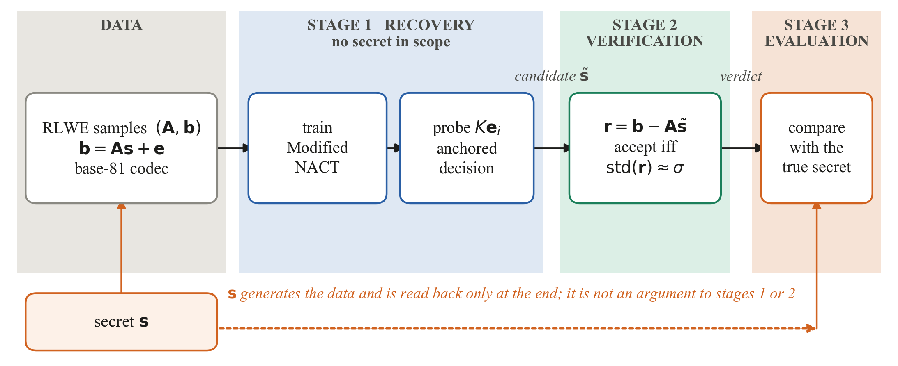
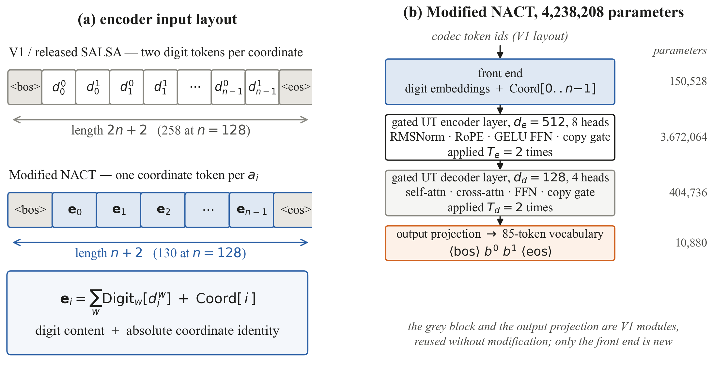
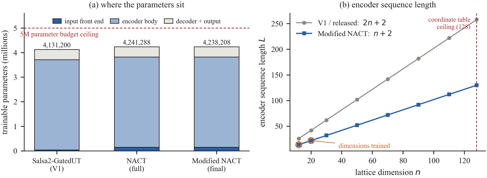
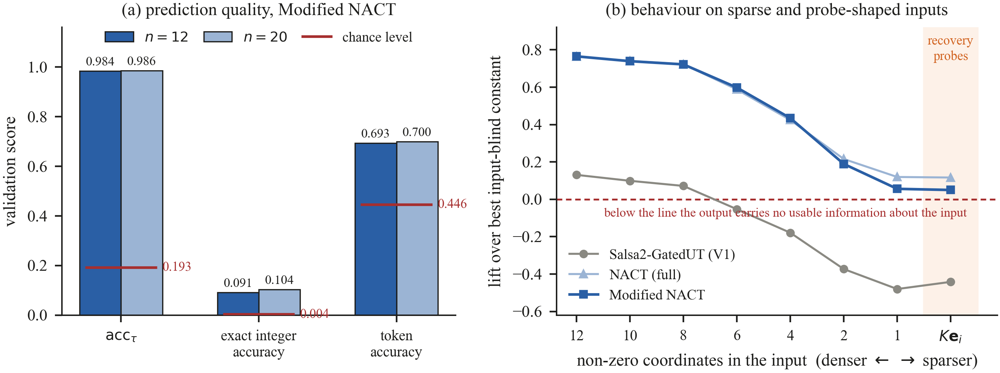
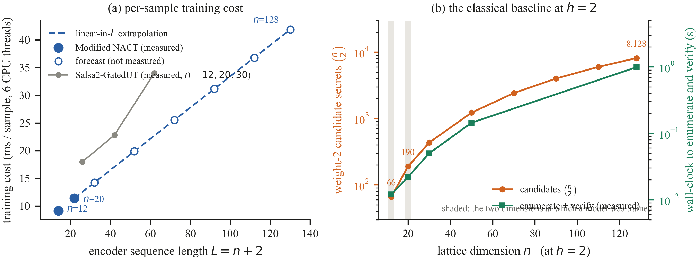

https://github.com/Nandini-Shukla21/SALSA-2.0Abstract— SALSA [1] showed that a transformer trained to predict the public target of a Learning With Errors (LWE) sample can be made to disclose a sparse binary secret through chosen inputs. Its published configuration uses on the order of 51 million parameters and GPU training. We ask a narrower question: what in that pipeline is carried by model capacity, and what is carried by how the lattice sample is presented to the encoder. We describe Modified SALSA, an independent CPU-only reimplementation of the attack whose final architecture, Modified NACT, has 4,238,208 trainable parameters, and whose single departure from the baseline front end is the input representation: one encoder token per lattice coordinate carrying a learned absolute coordinate identity, in place of a stream of two digit tokens per coordinate. This shortens the encoder sequence from 2n+2 to n+2 and leaves the parameter count independent of n up to a hard ceiling of 128 coordinates. On Ring-LWE instances with q = 251, σ = 3 and exact Hamming weight h = 2, trained on 100,032 samples per run, the model reaches validation accτ of 0.9839 at n = 12 and 0.9863 at n = 20 against a chance level of 0.1929, and chosen-input probing followed by an independent residual check recovers and verifies the secret exactly at both dimensions. Under a matched budget, seed and protocol, a 4,131,200-parameter gated Universal Transformer differing only in its input front end reaches accτ 0.3550 and recovers nothing. We also report the result that most constrains how these numbers should be read: exhaustive enumeration of all C(n,2) weight-two candidates, scored by the same residual criterion the attack uses, identifies the secret uniquely with zero false acceptances in every instance we tested, taking 0.99 s at n = 128 on one CPU thread. The demonstrated regime is therefore a diagnostic positive control for the learning pipeline, not a cryptanalytic advance, and we argue that this comparison belongs in any report of small-h neural secret recovery. Results rest on one secret and one training seed per dimension, and no model was trained above n = 20.
Index Terms— neural cryptanalysis, Learning With Errors, Ring Learning With Errors, transformer, lattice-based cryptography, secret recovery, coordinate-aware representation, model compression
Lattice-based cryptography now carries much of the weight of the post-quantum transition. The key-encapsulation mechanism standardised by NIST in August 2024 rests on a module variant of Learning With Errors [21], and the hardness of LWE [2] and its ring analogue [3] underpins a large part of deployed homomorphic encryption [14]. The classical cryptanalytic literature attacks these problems algebraically, by lattice reduction [19, 18]. SALSA [1] opened a different line: train a sequence model on public LWE samples to predict the target, then read the secret out of the trained model with inputs it never saw during training.
The published SALSA configuration is a gated Universal Transformer [7, 8] with encoder and decoder widths of 1024 and 512 and on the order of 51 million parameters, trained on two GPUs. Its successors PICANTE [4] and VERDE [5] scale the attack considerably further, to n = 350 and n = 512 respectively, principally through a preprocessing step that manufactures training data from a linear number of eavesdropped samples. Neither the original work nor its successors isolates how much of the attack depends on model capacity and how much on the way a lattice sample is presented to the encoder.
That is the question this paper addresses. We built an independent, from-scratch, CPU-only reimplementation of the SALSA pipeline under a hard parameter budget of five million, roughly a twelfth of the published configuration, and used it as an instrument rather than as a competitor. The first implementation, a gated Universal Transformer with 4,131,200 parameters that keeps the published architecture's weight sharing and copy gate but shrinks its widths, learns very little at n = 12 under a 100,032-sample budget and recovers no secret. The question was whether the cause is capacity, budget or representation.
It appears to be representation. Changing only the encoder's input front end — one token per lattice coordinate carrying a learned absolute coordinate identity, instead of a stream of two base-81 digit tokens per coordinate — moves accτ at n = 12 from 0.3550 to 0.9839 at a parameter count 2.6 % larger, and turns a failed attack into one that recovers and independently verifies the secret. We give the measurement that explains the mechanism: the baseline model's output stops carrying usable information about its input once the input becomes sparse, and the chosen-input probes that drive secret recovery are the sparsest inputs of all.
We also report, prominently, the result that bounds what any of this means. At exact Hamming weight two the space of candidate secrets has C(n,2) = n(n-1)/2 elements. We measured what happens if one simply enumerates that space and scores each candidate with the same residual criterion our attack uses to verify its own output: the correct secret is identified uniquely, with no false acceptances, in every instance we tested up to n = 128, in under one second of single-threaded NumPy. Our experiments are therefore a positive control establishing that a four-million-parameter model can learn the modular map and be made to disclose what it learned. They are not evidence about the security of any deployed parameter set, and we are explicit throughout about which is which.
An LWE instance in dimension n over the modulus q is a pair (A, b) with A drawn from ℤqm × n and
where s ∈ ℤqn is the secret and e is drawn coordinatewise from a narrow centred distribution [2]. Search-LWE asks for s given (A, b). For efficiency, many homomorphic-encryption deployments choose s binary and sparse, with a small exact Hamming weight [14, 17], and the concrete security of that choice has its own literature [15, 16]. Sparse binary secrets are the setting SALSA attacks and the setting we work in.
In the ring variant [3] the rows of A are not independent: a single generator vector in ℤqn is expanded into n rotations. SALSA generates its data this way, describing each a as a line of a circulant matrix built from an initial vector, and notes that the extra structure may help the model. We follow that description literally; Section V-C records that the released code in fact applies a sign flip on wrap-around, making its matrices negacyclic rather than circulant, and that our completed runs do not.
SALSA [1] has three parts. A sequence-to-sequence transformer [6] is trained on LWE samples to predict b from a, with integers written as base-B digit sequences; because the error makes exact prediction impossible, accuracy is measured within a tolerance, accτ, the fraction of predictions with |b - b̃| ≤ τ q, and τ = 0.1 in practice. A secret-recovery algorithm then queries the partially trained model. Direct recovery, the algorithm we reimplement, feeds the model a = Kei for each coordinate i and a large integer K: since a · s = K si, a model that has learned the secret should answer near 0 when si = 0 and near K when si = 1. A distinguisher algorithm based on the search-to-decision reduction is also given. Finally, candidates are checked by the standard deviation of the residuals: for the correct secret the residual is the error itself, and for a wrong one it is close to uniform on ℤq.
The reported results recover Hamming-weight-3 secrets for dimensions up to n = 128 at q = 251, with higher densities at smaller n, and the paper is careful that this is a proof of concept which cannot be used against real-world implementations. It also reports an architecture study in which replacing the Universal Transformer with a plain stack, or removing the copy gate, increases the data requirement by a factor of fourteen at n = 50. PICANTE [4] and VERDE [5] extend the attack to n = 350 and n = 512 and to ternary and narrow Gaussian secrets, chiefly through a preprocessing step that generates training data from roughly 4n eavesdropped samples, and VERDE reads the secret through a cross-attention mechanism rather than by probing. Both state that they do not threaten the NIST parameter sets.
Our work is orthogonal to that scaling programme, as Table I sets out. We hold the attack at small dimensions and vary the input representation and the parameter budget, which is the axis none of the three papers isolates. The broader use of learned models for cryptanalysis [20] and of transformers for exact numerical computation [9] supplies the surrounding context.
| System | Params. | Largest n | Secret | Compute |
|---|---|---|---|---|
| SALSA [1] | ≈51 M | 128 | binary, h = 3 | 2 GPUs |
| PICANTE [4] | not stated | 350 | binary, h ≤ 60 | GPU |
| VERDE [5] | not stated | 512 | binary / ternary / Gaussian | GPU |
| Modified SALSA (this work) | 4.24 M | 20 | binary, h = 2 | 1 laptop CPU |
We fix the modulus q = 251, the error scale σ = 3 and the tolerance τ = 0.1 throughout, following [1]. The secret s ∈ {0,1}n has exactly h non-zero coordinates, sampled uniformly over the supports of that size; h is an exact count and not an expectation, because sampling each coordinate independently would let the difficulty of the instance drift from run to run. The error e is drawn from a truncated discrete Gaussian with probability proportional to exp(-x2/2σ2). The public matrix is built in the ring setting: row i of each n × n block is the generator vector rotated right by i, so Aij = a(j-i) mod n, and m instances consume ⌈ m/n ⌉ independent generator vectors.
The learning task is to predict the b of eq. 1 from a. Both are written in base B = 81 with a fixed width of w = ⌈ logB q ⌉ = 2 digits, least significant first, giving a vocabulary of 85 tokens: four special tokens and 81 digits. The model minimises token-level cross-entropy over the target sequence.
A sparse secret makes several natural metrics misleading, so we fix the following distinctions and keep them separate for the rest of the paper.
Chance levels are computed, not assumed. Because b is uniform on ℤq for every instance we consider, the chance levels depend on q and τ alone and are identical at every n and h. A model that learned only the output marginals would score 1.8650 nats; the uniform-prediction loss is 4.4427. Chance accτ is 0.1929, chance exact-integer accuracy is 0.0040, and chance token accuracy is 0.4462 — so roughly 45 % token accuracy is free in this representation and must never be read as learning.
Coordinate accuracy is not recovery. A weight-h secret over n coordinates gives an all-zeros guess (n-h)/n coordinate accuracy for nothing: 0.8333 at n = 12 and 0.9000 at n = 20 with h = 2. We therefore report exact recovery — agreement in every coordinate — and always alongside the trivial baselines.
Prediction quality is not recovery. Exact per-sample integer accuracy of about 0.10 and exact secret recovery are different claims. Recovery does not require per-sample perfection; it requires the probe responses to fall on the correct side of an anchor.
Verification is not evaluation. The residual test below decides whether a candidate is correct without being told the answer. Comparing against the true secret is a separate, later step that exists only so that we can report what happened.
Given a candidate s̃ and fresh public samples, define the centred residual
where centerq(x) = x - q when x > q/2 and x otherwise. Centring matters: without it a residue of q-1 reads as a large positive error when it is really -1. If s̃ = s then r = e and the standard deviation is σ. If s̃ = s + δ with δ ≠ 0 then r = Aδ + e, which for a random A is close to uniform on ℤq with standard deviation
a separation of roughly 24× against σ = 3. That gap carries the whole weight of the verification step. We accept a candidate only when four criteria hold simultaneously on two independent fresh sample sets: the residual standard deviation is at most 1.5σ; the mean absolute residual is at most 1.5σ√2/π; the candidate's standard deviation is below a quarter of the smallest baseline's; and at least 99 % of absolute residuals fall within 3σ.

The project name Modified SALSA refers to the whole reimplemented pipeline, shown in Fig. 1 — data generation, encoding, training, chosen-input recovery, residual verification and evaluation. Modified NACT is the final model architecture within it. The two are distinct and we keep them so; experiment directories in the repository use the historical internal identifier NACT-F for Modified NACT, retained to preserve provenance.
In the baseline layout, inherited from the released implementation, each coordinate ai occupies w = 2 consecutive digit tokens, and the encoder reads a sequence of length 2n+2. The model's only notion of position is rotary [10], which is purely relative. Two consequences follow. First, a coordinate's identity must be reconstructed by the encoder from relative offsets, even though the task binds coordinate i to secret bit si and nothing else: b = Σi ai si is not permutation-invariant in i. Second, the property "this coordinate is zero" — which every recovery probe makes true of n-1 coordinates — is a conjunction across two token positions: in base 81 the low digit vanishes for 4 of the 251 residues and the high digit for 81, but only one residue satisfies both.
Modified NACT replaces the digit stream with one encoder token per coordinate,
In eq. 4, diw is the w-th base-81 digit of ai, Digitw is a per-slot embedding table and Coord is a learned absolute coordinate embedding. The encoder sequence becomes ⟨ bos⟩ e0 … en-1 ⟨ eos⟩, of length n+2. Position in this sequence is coordinate index, and the absolute embedding supplies the identity that the task requires and that rotary position encoding cannot. Fig. 2(a) shows both layouts.
The front end reads the same token tensor the codec already produces for the baseline, recovers the digits from the positions the codec put them in and reconstructs ai exactly; a test asserts the reconstruction against the codec for both supported layouts. Nothing else in the data pipeline changes, and a Modified NACT checkpoint speaks the same target language as a baseline checkpoint, so every downstream script runs against either without modification.
Two properties follow from the construction and were verified programmatically rather than argued. Coord is a fixed 128 × 512 table, so the parameter count does not depend on n: it is 4,238,208 at n ∈ {12, 20, 30, 50, 70, 90, 128}. It is likewise invariant to the loop counts, since looping reuses one shared parameter set: 4,241,288 for the full variant at encoder loops {1,2,4,8,16} and decoder loops {1,2,4}. Section VIII explains why neither invariance is evidence about capability at untrained dimensions.

The backbone is a gated Universal Transformer [7, 8] in the asymmetric, deep-encoder arrangement that [1] found effective: encoder width de = 512 with 8 heads, decoder width dd = 128 with 4 heads, one distinct parameter set per side applied Te = Td = 2 times, a feed-forward expansion of 4 with GELU [12], RMSNorm [11], rotary self-attention [10], a copy gate on every layer and no bias terms. Decoding is greedy, which is what beam size 1 amounts to in the reference implementation.
Table II gives the budget. The counts were verified three independent ways — summing numel over trainable tensors, summing a per-component breakdown, and an analytical formula — which agree exactly with nothing left unclassified. Fig. 3(a) shows the same decomposition graphically.
| Component | Baseline (V1) | NACT (full) | Modified NACT |
|---|---|---|---|
| Encoder token / digit embeddings | 43,520 | 82,944 | 82,944 |
| Encoder special embeddings | — | 2,048 | 2,048 |
| Absolute coordinate embedding | — | 65,536 | 65,536 |
| Numerical projection | — | 2,560 | removed |
| Learned zero-coordinate vector | — | 512 | removed |
| Sparse attention bias | — | 8 | removed |
| Encoder body | 3,672,064 | 3,672,064 | 3,672,064 |
| Decoder (incl. embedding) | 404,736 | 404,736 | 404,736 |
| Output projection | 10,880 | 10,880 | 10,880 |
| Total | 4,131,200 | 4,241,288 | 4,238,208 |

The coordinate-token representation was first introduced together with a set of numerical features intended to help the encoder with modular arithmetic: a signed centred residue, the k = 1 characters cos(2π ai/q) and sin(2π ai/q), an explicit zero indicator, a learned vector added at zero coordinates, and a per-head learned bias on attention keys at zero coordinates. We call that model NACT (4,241,288 parameters). Modified NACT is NACT with all six of those components removed, keeping only the one-token-per-coordinate layout, the digit embeddings it is built from, and the absolute coordinate embedding. The coordinate embedding is retained deliberately: it is the identity mechanism the one-token layout requires, and it is not a numerical feature.
The ablation removes 3,080 parameters, 0.073 % of the model, which is far too small for capacity to explain any difference in outcome. Section VI-E reports what it changed. Because all six components were removed in a single run, the experiment cannot attribute anything to an individual component; three further variants that would do so were designed and never executed.
For each coordinate i the attacker submits the probe a = Kei. Since the secret is binary, the noiseless target is K si mod q, so the model's answer should lie near 0 if si = 0 and near K mod q if si = 1. The entire information content of a probe is therefore the ring distance between those two hypotheses,
maximal near K = q/2 and vanishing as K approaches 0 or q. This has a practical consequence that the released implementation does not account for: it uses very large probe multipliers, for example 239,145, and reduces them modulo Bw rather than modulo q, which can place the probe outside ℤq altogether. Only K mod q is mathematically meaningful, so a "large" K near q is a bad probe, not a good one. We reduce modulo q and report the reduced value.
Our decision rule differs from the reference in a way that matters cryptanalytically. The released evaluator thresholds the raw predictions, forms a bit vector, then also forms its complement, and reports whichever matches the true secret better. That last step consults the answer being sought, so it cannot be part of an attack. We instead assign each prediction b̃ to whichever of the two mathematically predicted values it is nearer on the ring, which needs no ground truth and has no polarity ambiguity. Writing d0 and dK for the ring distances from b̃ to 0 and to K mod q, the signed score is
A probe whose output fails to decode contributes score 0: unreadable is treated as no evidence, never as evidence either way.
Candidates from a sweep over several K are combined by a vote weighted by the separation of eq. 5, so a probe carrying almost no information counts for almost nothing:
We also retain a diagnostic rule that selects the single K with the largest mean absolute margin, and we report a degeneracy we found in it. At K = 1 the two hypotheses are b ≈ 0 and b ≈ 1: adjacent. A model that confidently answers a constant 0 then sits at distance 0 from one anchor and 1 from the other, so |scorei| = 1 at every coordinate and the mean margin is the maximum attainable. The margin rule therefore rewards the least informative probes precisely because they are least informative, and at n = 20 it duly selected K = 1, one of our negative controls. The repair is to require, for selection only, that a probe's two hypotheses be further apart than the error scale:
The guard is derived from the noise scale rather than chosen by hand. Excluded probes are still measured and still vote, with the negligible weight their separation earns them. Both rules use public quantities only. Alg. 1 states the procedure in full.
Because the failure mode being guarded against is subtle — a pipeline that leaks the answer into the attack and then reports success — we enforce the separation structurally rather than by convention. The recovery class is constructed from a model and a codec and has no parameter through which a secret could be supplied. The verifier is a single function taking (A, b, s̃, q, σ) and nothing else. The evaluation stage is the only one that loads the secret, and it runs last, after both a candidate and a verification verdict exist. The pipeline can be run with evaluation disabled, in which case the attack completes with no ground truth anywhere in the process. Tests scan the source text of the recovery package for any reference to ground truth.
Table III lists the configuration. Every experiment is driven by a YAML file with an explicit inheritance chain, so that the cryptographic instance and the evaluation protocol are shared objects across a comparison rather than re-declared copies; checkpoints carry a fingerprint of their configuration and the pipeline refuses to load a mismatched one.
| Setting | Value |
|---|---|
| Modulus q / error scale σ | 251 / 3.0 |
| Error distribution | truncated discrete Gaussian |
| Secret | binary, exact Hamming weight h = 2 |
| Sample structure | Ring-LWE, circulant |
| Dimensions trained | n = 12, n = 20 |
| Encoding | base 81, width 2, LSB-first, no separator |
| Vocabulary | 85 (4 special + 81 digits) |
| Encoder sequence L = n+2 | 14, 22 |
| Tolerance τ | 0.1 (τ q = 25.1) |
| Optimiser | AdamW [13], β = (0.9, 0.98), ε = 10-9 |
| Learning rate | 5 × 10-4, cosine to 10-6, 200 warmup steps |
| Weight decay / gradient clip | 0.01 / 1.0 |
| Batch size × steps × epochs | 64 × 79 × 20 |
| Sample budget (configured / seen) | 100,000 / 100,032 |
| Sample reuse | 1 (every sample fresh) |
| Validation set | 2,048 held-out sequences |
| Checkpoint selection | minimum validation loss |
| Seed | 0, deterministic |
| Probe multipliers K | 1, 31, 63, 94, 125, 126, 157, 188, 220, 250 |
| Negative controls | K = 1, K = 250 (separation 1) |
| Hardware | AMD64 12-core CPU, 6 torch threads, 15.3 GB RAM, no GPU |
| Software | Python 3.10.11, PyTorch 2.13.0+cpu, NumPy 2.2.6 |
We distinguish three ways a figure in this paper was obtained. Trained figures come from the two training runs, each executed once at seed 0. Replayed figures were produced in the course of preparing this manuscript by loading the stored checkpoints and re-running recovery, verification and evaluation; the replay trains nothing and takes 1.09 s at n = 12 and 1.39 s at n = 20, end to end. Derived figures are computed from recorded artefacts without a model, such as the enumeration baseline of Section VII. Replay reproduced every recorded recovery and verification outcome, and the test suite — 690 tests passing and 2 skipped — was re-executed for this paper with the same result.
Our implementation is independent, so we audited it against the released reference [22] stage by stage rather than assuming equivalence. Of sixteen points of comparison, five were exact matches, four were deliberate improvements, three were harmless implementation differences, three were potentially behaviour-changing, and two were major incompatibilities. Table IV lists those that could change a result. We report them because several of them mean our numbers are not directly comparable with the published ones, in both directions.
| Stage | Reference | This work | Consequence |
|---|---|---|---|
| Sample reuse | each instance reused ≈10 times | no reuse | Published sample counts count distinct instances; our per-sample budgets are not directly comparable and our sample-requirement extrapolations may be pessimistic by up to ≈10×. |
| Matrix construction | circulant with the strict upper triangle negated, i.e. negacyclic, despite the paper's wording | genuinely circulant | The function to be learned differs, though it is of the same family. Our code implements both; no completed run used the negacyclic variant. |
| Probe reduction | K mod Bw, which can leave ℤq | K mod q | The reference can feed values that never occur in training, an unintended distribution shift on top of the intended one. |
| Candidate polarity | six variants scored against the true secret; the best is reported | anchored on 0 and K mod q; no ground truth | Our criterion is strictly harder. The two success statistics are not comparable. |
| Model capacity | ≈51 M parameters (paper) | 4.24 M | The largest single deviation. |
| Residual verification | described in the paper; absent from the released evaluator | implemented | Closes the attack loop. |
| Error distribution | rounded Gaussian, measured std 3.0139 | truncated discrete Gaussian, std 3.0000 | Negligible: total variation distance 0.00219. |
Table V gives the observed outcomes and Fig. 4(a) plots the three primary metrics against their chance levels. Modified NACT clears every chance level at both dimensions by a wide margin: validation loss is roughly half the marginals-only baseline, and accτ is above 0.98 against a chance level of 0.1929. Exact per-sample integer accuracy is about 0.10 — far above its 0.0040 chance level, but nowhere near perfect prediction, which the error makes impossible in any case. Decoding never failed on the validation set at either dimension.
The two dimensions are close to one another on every metric, with n = 20 marginally the better of the two. We draw no trend from this. Two points support any monotone curve one cares to fit, and both runs are single-seed.

Chosen-input recovery produced the exact secret at both dimensions. Of the ten probe multipliers swept, eight yielded the exact secret on their own; the two failures are K = 1 and K = 250, the designed negative controls, whose ring separation is 1 and which are therefore expected to fail. Put the other way, all eight multipliers whose separation exceeds the noise-derived guard of eq. 8 succeeded individually, and the aggregate vote of eq. 7 also succeeded. Every probe response decoded at both dimensions.
Verification passed all four criteria on both dimensions. The recovered candidate leaves a residual with standard deviation 2.998 at n = 12 and 2.941 at n = 20 against a configured σ of 3.0, while an all-zeros candidate on the same samples leaves 71.803 and 72.477 respectively — within one per cent of the σunif = 72.457 that eq. 3 predicts for a wrong candidate. The verifier reached this verdict without access to the secret.
| n = 12 | n = 20 | chance / reference | |
|---|---|---|---|
| Prediction | |||
| Validation loss (nats) | 0.9891 | 0.9764 | 1.8650 marginals-only |
| accτ, τ = 0.1 | 0.9839 | 0.9863 | 0.1929 |
| Exact integer accuracy | 0.0913 | 0.1035 | 0.0040 |
| Token accuracy | 0.6934 | 0.6995 | 0.4462 |
| Mean |b - b̃| | 7.15 | 6.51 | — |
| Decode failure rate | 0.0000 | 0.0000 | — |
| Recovery | |||
| Exact secret recovery | yes | yes | — |
| Coordinate accuracy | 1.0000 | 1.0000 | 0.8333 / 0.9000 all-zeros |
| Hamming distance to secret | 0 | 0 | — |
| Multipliers recovering alone | 8 / 8 eligible | 8 / 8 eligible | 2 negative controls fail |
| Probe decode validity | 1.000 | 1.000 | — |
| Verification | |||
| Residual std, candidate | 2.998 | 2.941 | σ = 3.0 |
| Residual std, all-zeros | 71.803 | 72.477 | σunif = 72.457 |
| Fraction within 3σ | 0.9980 | 0.9985 | — |
| Criteria C1–C4 | all pass | all pass | — |
| Cost | |||
| Training wall-clock (s) | 1,146 | 1,424 | — |
| Training throughput (samples/s) | 108.9 | 87.4 | — |
| Peak resident memory (MB) | 447 | 504 | — |
| Replay: recover + verify (s) | 1.09 | 1.39 | — |
| Candidate space C(n,2) | 66 | 190 | — |
Table VI reports the controlled comparison at n = 12. A field-by-field difference of the two configurations found exactly one discrepancy, the architecture name; the dimension, Hamming weight, modulus, error scale, ring structure, encoding, seed, optimiser, learning rate, schedule, batch size, validation set, sample budget, evaluation cadence, tolerance and both loop counts are inherited unchanged, and the two arms share a data stream and a secret.
The baseline reaches validation loss 1.7413, which sits essentially at the 1.8650 marginals-only baseline: at this budget it has largely not learned secret-related structure. Its accτ of 0.3550 is above chance, so it is not learning nothing, but on the recovery probes 58 % of its outputs were undecodable and it answered a single constant on eight of the ten multipliers. It recovered no secret at any K. Modified NACT, 2.6 % larger, recovered the secret at eight.
At equal effective depth and across the seeds available, the direction of the difference is consistent: over three paired seeds, the coordinate-token model won on every metric. We state plainly what that can support. With three pairs, the smallest attainable two-sided p from an exact sign test is 0.25, so no statistical significance is claimed and none is reachable from this design. Unanimity across three seeds is reported as consistency of direction, nothing more. Two of the five planned seeds for the coordinate-token arm were never completed.
| Metric | Baseline (V1), seed 0 | Modified NACT, seed 0 | Baseline, 5 seeds | NACT, 3 seeds |
|---|---|---|---|---|
| Validation loss (nats) | 1.7413 | 0.9891 | 1.8096 ± 0.0469 | 0.9136 ± 0.0232 |
| accτ | 0.3550 | 0.9839 | 0.2232 ± 0.1197 | 0.9863 ± 0.0021 |
| Exact integer accuracy | 0.0078 | 0.0913 | 0.0060 ± 0.0035 | 0.1110 ± 0.0092 |
| Token accuracy | 0.5324 | 0.6934 | 0.4784 ± 0.0408 | 0.7014 ± 0.0039 |
| Mean |b - b̃| | 63.47 | 7.15 | 87.30 ± 28.36 | 6.00 ± 0.59 |
| Probe decode validity | 0.417 | 1.000 | — | — |
| Probe lift (Fig. 4b) | -0.4417 | +0.0500 | — | — |
| Multipliers recovering alone | 0 / 10 | 8 / 10 | — | — |
| Exact secret recovery | no | yes | — | — |
| Trainable parameters | 4,131,200 | 4,238,208 | 4,131,200 | 4,241,288 |
A comparison of outcomes does not explain a mechanism. To get at one, we fed each frozen model inputs of decreasing density and scored its predictions not by raw accτ but by lift: accτ minus the score of the best input-blind constant predictor on the same targets. The correction is necessary because sparser inputs make a constant predictor better, so raw accuracy understates the collapse. Lift at or below zero means the model's output carries no usable information about its input.
Fig. 4(b) shows the result. The baseline crosses zero between eight and six non-zero coordinates and falls to -0.4800 at a single non-zero coordinate, with probe decode validity 0.417 — most of its probe outputs were simply unreadable. Modified NACT never crosses zero over the measured range and holds decode validity 1.000 throughout. The ranking is perfectly monotone in sparsity for both models.
The interpretation we draw is narrow but, we think, useful. The recovery probes are not a separate regime that a model either handles or does not; they are the extreme point of a continuum of input sparsity, and a model's position on that continuum is measurable before any recovery is attempted, using public inputs only. This matters because the probe distribution is extraordinarily far from the training distribution. In our setting a uniformly drawn training row has on average 0.048 zero coordinates and never had more than three in 200,000 rows, whereas a probe has n-1; at the token level the fraction of zero digits rises from 0.156 in training to 0.846 in a probe. The attack asks the model to extrapolate into a region of input space it has never seen, and the lift curve measures whether it can.
We note one asymmetry the diagnostic also shows. Modified NACT's margin at the sparse end is thinner than full NACT's: +0.0562 against +0.1196 at a single non-zero coordinate, and +0.0500 against +0.1167 on the probes, roughly half in both cases. The six removed components may still be contributing there. A single seed cannot tell whether that difference is real or noise.
Table VII compares full NACT with Modified NACT at matched seed, depth and budget. Every primary difference falls inside full NACT's own three-seed band, so at one seed the two models are not distinguishable on these metrics. Modified NACT retains 100 % of the baseline-to-NACT gap in accτ, 93.7 % in loss and 89.5 % in exact accuracy.
The honest statement is indistinguishable at one seed, not equivalent. A single run cannot establish a null, and the ablation removed six components simultaneously, so it attributes nothing to any one of them. What it does support is that the bulk of the advantage over the baseline comes from the one-token coordinate layout and the absolute coordinate identity it makes expressible, rather than from the numerical features. Modified NACT is not better for being 3,080 parameters smaller; that figure is scientifically meaningless. The interesting result is that removing those components changed so little.
| Metric | NACT (full) | Modified NACT | Change | 3σ band | Resolvable? |
|---|---|---|---|---|---|
| Validation loss (nats) | 0.9388 | 0.9891 | +0.0503 | 0.0696 | no |
| accτ | 0.9839 | 0.9839 | +0.0000 | 0.0063 | no |
| Exact integer accuracy | 0.1011 | 0.0913 | -0.0098 | 0.0276 | no |
| Trainable parameters | 4,241,288 | 4,238,208 | -3,080 | — | — |
Three gaps are large enough that we state them here rather than only in Section IX, because each has been mis-stated in our own earlier project documentation and corrected during the preparation of this paper.
The multi-secret result belongs to full NACT, not to Modified NACT. Three checkpoints trained under different seeds — and therefore against three different secrets — gave three exact recoveries and three verification passes at n = 12. Those checkpoints have 4,241,288 parameters: they are full NACT. For Modified NACT specifically the evidence is one secret at each of two dimensions. Two successes are an outcome, not a rate, and we do not quote a recovery probability anywhere in this paper.
The baseline's failure is established at n = 12 only. Direct recovery was never run against a baseline checkpoint at n = 20, so the correct entry there is "not measured", not "failed". What is measured at n = 20 is that the baseline, given 200,000 samples — twice our budget — reached loss 1.8233, accτ 0.2344 and exact accuracy 0.0034, the last of which is below its 0.0040 chance level.
Two comparable models were trained at n = 30 and both failed. At n = 30 with h = 3 on the identical 100,032-sample budget, a 4,131,200-parameter gated Universal Transformer reached loss 1.8426, accτ 0.1343 and exact accuracy 0.0029, and a 4,251,520-parameter plain transformer reached 1.8431, 0.1479 and 0.0024. Both sit at or below chance on every metric. These are clean negative results and the only n = 30 anchor the project owns; neither used the coordinate-token representation, and both used a different Hamming weight.
Everything above concerns whether a compact model can learn the modular map and be made to disclose the secret. It says nothing about whether doing so is the best way to recover that secret, and for the instances we tested it is not. We think the comparison belongs in the paper rather than in a footnote.
A binary secret of exact Hamming weight h admits C(n,h) candidates. At h = 2 this is
The count in eq. 9 grows quadratically in n, so the dimension does increase the work an exhaustive search must do, and anyone writing that dimension is irrelevant at fixed h is overstating the case. What is true is narrower and still decisive: over the dimensions considered here the candidate space stays small in absolute terms, and enumeration remains a practical baseline provided that scoring a candidate is cheap and that the scoring rule does not accept wrong ones.
Both of those provisos are measurable, so we measured them, using the project's own acceptance criterion — centred residual standard deviation at most 1.5σ — as the scoring rule, on 2,048 fresh samples, with no model involved. Table VIII reports the outcome. Enumeration identified the correct secret uniquely in every instance tested, and across twenty independent instances at each of n = 50 and n = 128 there was not one false acceptance among 187,060 wrong candidates scored. The whole sweep at n = 128 takes 0.99 s of single-threaded NumPy, against 1,146 s to train the model at n = 12. The margin is not narrow: the correct candidate's residual standard deviation is near 3 and the next-best is near 70.
| n | Candidates | Wall-clock | Instances | Uniquely correct | False accepts |
|---|---|---|---|---|---|
| 12 | 66 | 0.012 s | 1 | 1 / 1 | 0 |
| 20 | 190 | 0.022 s | 1 | 1 / 1 | 0 |
| 30 | 435 | 0.050 s | 1 | 1 / 1 | 0 |
| 50 | 1,225 | 0.144 s | 20 | 20 / 20 | 0 / 24,480 |
| 128 | 8,128 | 0.988 s | 20 | 20 / 20 | 0 / 162,540 |
| 128 (h = 3) | 341,376 | 193.6 s | 1 | 1 / 1 | 0 |
Three consequences follow, and we hold to all three. First, our n = 12 and n = 20 results are diagnostic positive controls: they establish that the learning pipeline works and that the representation matters, and they establish nothing about the difficulty of LWE. Second, a successful neural recovery at n = 128, h = 2 would also demonstrate nothing cryptanalytically, because the same table shows the instance falls to a one-second script. Third, the load-bearing axis of difficulty in this problem is the Hamming weight and the sample efficiency of the attack, not the dimension: C(128, 3) = 341,376 still enumerates in about three minutes, and it is only at substantially larger h that enumeration stops being the obvious first thing to try.
Two caveats bound the enumeration result itself. It assumes h is known; an attacker who does not know it must sweep over weights, which multiplies the cost. And the false-acceptance rate is measured here at h = 2 and h = 3, with 2,048 samples and q = 251; it is a property of the residual test's discriminating power at that sample size, and at much larger candidate counts or with fewer samples it would need re-measuring rather than assuming.
We make a modest methodological recommendation on the strength of this. Reports of neural secret recovery at small Hamming weight should state the size of the candidate space and the cost of enumerating it under the paper's own verification rule. It takes one table, and without it a reader cannot tell a cryptanalytic result from a learning result.
This section separates what was measured from what was computed from the code and from what is extrapolation. Table IX classifies every claim; Fig. 5 plots the cost side.
The coordinate embedding is a fixed 128 × 512 table, so Modified NACT accepts any n ≤ 128 without a parameter change, and n = 128 fits exactly. It is tempting to read that as a claim about n = 128. It is not one, for three independent reasons.
Every larger dimension therefore requires training from scratch. Above n = 128 the table grows silently to size n, adding 512 parameters per coordinate, at which point the model is no longer the one described here and the pipeline's parameter check rejects it.
Per encoder layer application, attention costs O(L2 de) and the feed-forward block O(L de2). At de = 512, de2 = 262,144 against L2 = 16,900 at n = 128, so the feed-forward term dominates across the entire range considered and cost is approximately linear in L up to n = 128. Quadratic attention blow-up is not the binding constraint at this width. The one-token representation halves L relative to the baseline, which is why the model is both more effective and cheaper.
That is confirmed by a same-session forward benchmark at batch 32 with five repeats: at n = 30 the coordinate-token model runs at 150.1 samples/s against the baseline's 91.7, a factor of 1.64, and at n = 128 at 38.9 against 20.0, a factor of 1.95 — converging on the 2× the sequence-length ratio predicts. Memory is not a constraint: peak resident set was 447 MB at n = 12 and 504 MB at n = 20, and the baseline at n = 30 with L = 62 peaked at 777 MB.
Extrapolating training cost is less secure. Fitting a straight line through our two measured per-sample costs gives ≈ 5.24 + 0.282 L ms/sample, which reaches 3.66× the n = 20 cost per 100,000 samples at n = 128. We label that a floor rather than an estimate, for two reasons. The baseline's three-point series is visibly super-linear in L, so the true curve probably sits above the line. More importantly, this is cost per 100,000 samples; total cost is that figure multiplied by the number of samples required, and that second factor is both unknown and dominant.

Two structural observations, both read off the code rather than measured, suggest the sample requirement grows super-linearly.
First, supervision per sample is constant. The target is a single element of ℤq regardless of n — our runs recorded exactly 3 × 100,032 target tokens at both dimensions — so each sample carries at most log2 251 = 7.97 bits of supervision while the number of terms in b = Σi ai si grows linearly. Signal per sample falls roughly as 1/n while the function to be learned gets harder.
Second, the ring structure thins the training distribution as n grows. Because n instances come from one generator vector, a fixed budget of 100,032 samples contains 8,336 independent generator polynomials at n = 12 but only 782 at n = 128. This is a property of circulant RLWE, not of the model.
The literature points the same way. [1] reports requiring between 221.9 and 224.8 samples at n = 30 with h = 3, which is 39 to 292 times our entire per-run budget for the smallest dimension beyond our measurements — although, as Table IV notes, that count is of distinct instances and the reference reuses each about ten times, so the comparison with our no-reuse budget is not direct.
| n | Status | Loss / accτ | Exact recovery | Compute vs. n = 20 | Confidence |
|---|---|---|---|---|---|
| 12 | observed | 0.9891 / 0.9839 | yes, 1 secret, 1 seed | 0.80× | high (measured) |
| 20 | observed | 0.9764 / 0.9863 | yes, 1 secret, 1 seed | 1.00× | high (measured) |
| 30 | two other architectures at chance, h = 3 | not reliably estimable | uncertain | 1.25× | medium |
| 50 | extrapolated | not reliably estimable | uncertain at this budget | 1.74× | low |
| 70 | extrapolated | not reliably estimable | unlikely at this budget | 2.23× | low |
| 90 | extrapolated | not reliably estimable | unlikely at this budget | 2.73× | low |
| 110 | extrapolated | not reliably estimable | unlikely at this budget | 3.22× | low |
| 128 | extrapolated; architectural ceiling | not reliably estimable | unlikely at this budget | 3.66× | low |
n = 30 is the largest dimension for which a cautious prediction is worth making — not a prediction of success, but a prediction that the experiment is informative. It is one increment beyond measured ground; it is the only untested dimension where a same-budget negative control already exists, making a Modified NACT run a controlled comparison on the first attempt; and it is the third point, at which the shape of the trainability curve stops being a modelling choice and becomes a measurement. The cost is bounded: about 1.25× the n = 20 run per 100,000 samples, well under an hour. We would match the Hamming weight to the existing controls or re-run a control at h = 2, and pre-register the thresholds before looking — which is straightforward here, because the chance baselines do not depend on n.
We take the limitations to be as much a result of this work as the measurements are, and list them in descending order of how much they constrain the conclusions.
The experiments that would most change what can be claimed, in order: multi-seed, multi-secret runs at both demonstrated dimensions, so that recovery becomes a rate with an interval rather than an outcome; a Modified NACT run at n = 30 against the existing controls; increasing h until enumeration stops being competitive, which is the only direction in which this attack family becomes cryptanalytically interesting; the three remaining ablation variants; and a capacity sweep at fixed representation to separate the two axes this paper has so far only been able to compare at one point each.
We set out to find what in the SALSA attack pipeline depends on model capacity and what depends on how a lattice sample is presented to the encoder. Working at roughly a twelfth of the published parameter count and entirely on a laptop CPU, we found that a change confined to the encoder's input front end — one token per lattice coordinate carrying a learned absolute coordinate identity, in place of a stream of digit tokens — separates a pipeline that recovers and independently verifies a sparse binary secret from one that, at a parameter count 2.6 % smaller and under an identical protocol, recovers nothing. The sparse-input lift diagnostic locates the mechanism: the chosen-input probes that drive recovery are the extreme point of a sparsity continuum, and the baseline representation's output stops carrying information about its input well before that point is reached.
We are equally clear about what this is not. At exact Hamming weight two, exhaustive enumeration scored by the attack's own residual criterion identifies the secret uniquely, with no false acceptances in any instance we tested, in under a second at n = 128. The experiments reported here are therefore a positive control for a learning pipeline, not a cryptanalytic result, and we have argued that this comparison should accompany any report of neural secret recovery at small Hamming weight. The contribution we would stand behind is a representational finding about how LWE samples should be presented to a sequence model, an attack implementation whose recovery and verification stages provably never see the answer, and a diagnostic that predicts probe-time behaviour from public inputs alone. Whether the finding survives at larger dimensions and larger Hamming weights is open, and the experiments that would settle it are named above.
The implementation, configurations, recorded experiment artefacts, analysis scripts and the figure-generation code for this paper are in a public repository at https://github.com/Nandini-Shukla21/SALSA-2.0. At the time of writing it carries 236 commits on its default branch and 328 tracked files. Each experiment runs from a configuration file plus a fixed seed; each run directory holds its resolved configuration, a metadata record naming the exact command, the git commit, the interpreter and the package versions, a per-epoch metrics log and a summary. The training run reported here for n = 12 was executed at commit 018a8a8.
Two things are not in the repository and we state so rather than implying otherwise. Model checkpoints are excluded by the ignore rules — the pattern *.pt is listed — so the stored weights behind the replay figures are not publicly downloadable, and a reader wishing to reproduce recovery must first retrain, which takes about 19 minutes at n = 12 and 24 minutes at n = 20 on one laptop CPU. No LICENSE file is present, although pyproject.toml declares the MIT licence; the authors should add the file before any formal release. Nothing in the repository is subject to a disclosure restriction known to the authors: the cryptographic parameters are those published in [1], and all data are synthetic and generated by the included code.
The commands that reproduce the headline results against stored checkpoints are python scripts/run_pipeline.py configs/pipeline_n12.yaml and the corresponding pipeline_n20.yaml. The test suite is run with pytest -q. Both were executed while preparing this manuscript: the pipelines reproduced every recorded recovery and verification outcome, and the suite reported 690 passed and 2 skipped.
This statement is a template. It has not yet been confirmed by all named authors and must be completed and approved before submission. On the evidence available to us — the repository history and the recorded experiment metadata — the implementation, experiments, analysis and manuscript draft are attributable to the first author. The contributions of the second and third authors are not documented in the artefacts we examined, and we have therefore not asserted them. The authors should replace this paragraph with an agreed statement covering conceptualisation, methodology, software, validation, formal analysis, investigation, writing, supervision and project administration before the paper is submitted.
The research was carried out in the context of an internship at the Scientific Analysis Group, DRDO. This paper is not an official DRDO or SAG publication, has not been endorsed or approved by either organisation, and does not represent an official position of DRDO or of the Government of India. The authors should confirm whatever internal review or clearance their institutions require before submission.
No funding is declared because none was documented. The authors declare no competing interests. All authors must review and approve the final manuscript and agree to the author order before it is submitted.